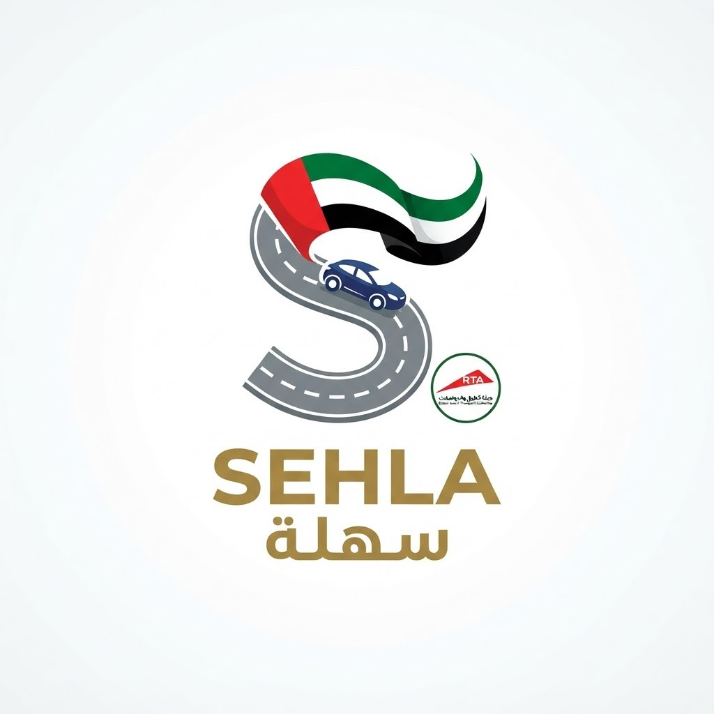

SEHLA

The Problem
Dubai's signals are fixed. Dubai's traffic isn't.
Our Solution
Sehla: a software-only digital twin — AI signals, continuously optimized
Adaptive Signal Control
Mistral AI reads live queue length and volume and retimes signal phases as congestion builds — within RTA's hard constraints.
SUMO RL Optimization
A reinforcement-learning agent trained in a SUMO traffic simulation keeps improving the timing policy — and stress-tests any scenario safely, offline.
Deterministic Safety Net
Every AI decision is validated against hard-coded RTA rules before it can touch a real signal.
How It Works
Adaptive Signal Control, step by step
Live Queue & Volume
Streamed frame-by-frame from historical RTA sandbox datasets.
Mistral AI
Receives the JSON traffic state and proposes a signal adjustment.
Deterministic Rules
Checks RTA constraints — no conflicting greens, min/max phase lengths.
Approved Timing
Exact, seconds-adjusted timing applied and shown live on the dashboard.
The Digital Twin & RL Engine
SUMO reinforcement learning that keeps getting better
SUMO Microsimulation
A calibrated digital twin of the junction replays real RTA data, modelling every vehicle.
RL Agent
Rewarded for throughput and shorter waits, it improves the signal policy over thousands of episodes.
Scenario Simulation
Events, incidents, road closures — tested safely offline before any real change.
Validated Policy
The best policy feeds the live adaptive layer — still gated by the deterministic safety filter.
Live Demo
It's demo time
Let's switch to the live Sehla dashboard — Business Bay Crossing, before vs after, narrated in real time by the Mistral Reasoning Panel.
Replay historical rush-hour data for Business Bay Crossing
Show baseline congestion under today's fixed timing
Toggle to Sehla-optimized state — watch queues clear
Reasoning Panel narrates every decision in plain English
Also Extends To
Two more layers: fleet demand and events
Fleet Routing via VCG Auction
Commercial fleets bid for peak-hour corridor slots. Winners pay for guaranteed access; non-winners shift off-peak for a Salik "congestion credit" — a new revenue stream for RTA, and smaller fleets are compensated, not punished.
Event-Aware Pre-Optimization
A Mistral agent watches Dubai's live events calendar and pre-times signals and pedestrian phases before a crowd surge forms — e.g. a sold-out Coca-Cola Arena show, retimed before doors open.
We Did Our Homework
RTA already has Fusion. Here's where Sehla fits.
RTA's Fusion (UTC-UX Fusion) — live, rolling out now
- AI + digital-twin signal control, already deployed at live intersections
- 16–37% efficiency gains in Phase 1; targeting ~300 intersections by Q3 2026
- Simulates changes in a digital twin before applying them
- Built for future V2X (vehicle-to-signal) communication
The gap Sehla sits in
- Fusion optimizes signal timing from live traffic data — it doesn't touch fleet demand, truck permits, or tolling
- It reacts to congestion as it forms — it isn't wired to Dubai's events calendar to anticipate demand before it arrives
- Sehla adds SUMO-RL continuous optimization, the VCG fleet auction, and event-aware pre-optimization on top
Government of Dubai Media Office, "RTA's Traffic Signal Upgrade Boosts Flow 37%," 4 Sep 2025.
Expected Returns — Proven Elsewhere
What comparable deployments suggest is achievable
Benchmark performance, comparable deployments
Illustrative annual value at scale
Business Plan & Rollout
Cost, revenue, and a low-risk path to city-wide
Cost
Software-only. No new sensors, signal boxes, or gantries — runs on RTA's existing data feeds.
Revenue
VCG auction fees from logistics fleets for guaranteed peak-hour access — a new, ongoing stream.
Risk
Shadow deployment first — measure-only, zero live-control risk — before any wider commitment.
Shadow Deployment
One junction, measure only — no live control, zero operational risk.
100-Fleet Pilot
Partner with a logistics operator (e.g. Aramex-scale) on the auction engine.
City-Wide Rollout
Full integration across RTA's adaptive signal network and auction platform.
Responsible AI & Data Plan
Safe, fair, and transparent by design
Data
Aggregated traffic flow, volume and signal-timing data only — no personal or vehicle-owner data.
Safety
AI proposes, hard-coded rules dispose. Every suggestion is checked before it can affect a road.
Transparency
The Reasoning Panel explains each decision's logic in plain English, in real time.
Fairness
A minimum slot share is reserved for smaller operators; outcomes monitored by fleet size.
Sehla
A software upgrade to infrastructure RTA already owns — the fastest, lowest-capex path to measurable congestion relief.
Thank you — questions welcome.
Appendix
Sources & References
- Waheed Abbas, "Dubai motorists lose nearly 4 days to traffic in 2025 as congestion rises," Khaleej Times, 25 Jan 2026 — TomTom Traffic Index / INRIX data.
- SM Ayaz Zakir, "Dubai RTA adds two more lanes to Emirates Road, upgrades Business Bay and 26 other locations," Khaleej Times, 30 Jun 2026.
- "RTA turns 20: Dh175 billion to ease traffic congestion and mobility in Dubai," Gulf News, Oct 2025 — McKinsey & Company study.
- Government of Dubai Media Office, "RTA's Traffic Signal Upgrade Boosts Flow 37%," 4 Sep 2025 — UTC-UX Fusion Phase 1 results and rollout timeline.
- Development Asia, "The Case for Electronic Road Pricing" — Singapore ERP case study.
- Smart Cities Dive, "This AI traffic system in Pittsburgh has reduced travel time by 25%."
- US Department of Transportation, UTC Spotlight — "Surtrac for the People."
- Eclipse SUMO (Simulation of Urban MObility) — open-source traffic microsimulation, DLR.
- CUD 4IR Mobility Student Challenge — Day 1 briefing deck, RTA × Canadian University Dubai, 30 Jun 2026.
- Sehla Project Description Document & Development Roadmap (team submissions).
- Mistral API Docs · Next.js · FastAPI · VCG Auction Mechanism — Stanford University Auction Theory.